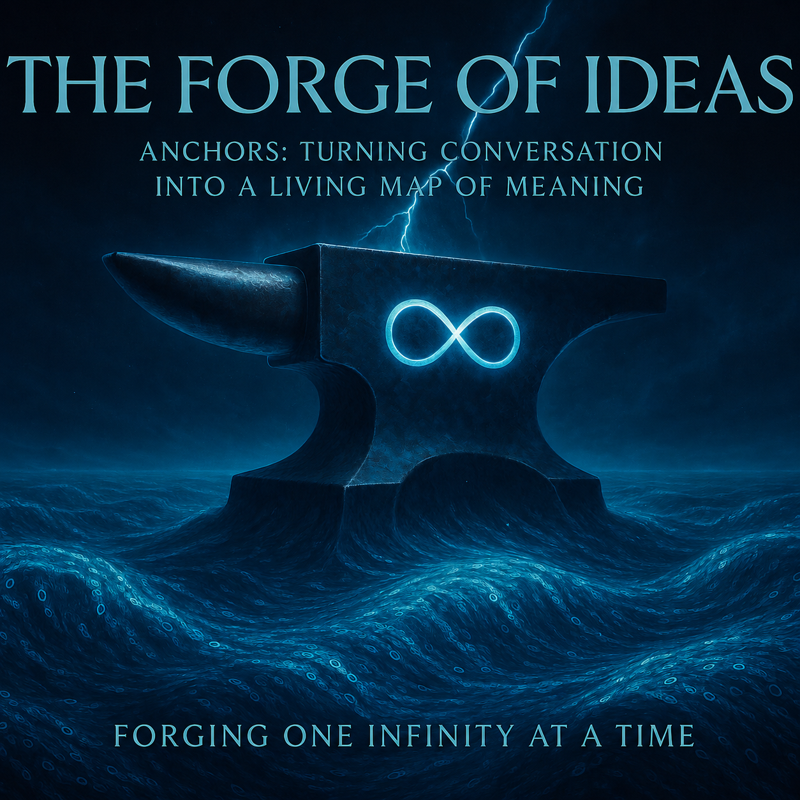

### Document for the Perplexity AI Team, by help of Perplexity
Sent: May 2026

Hi Perplexity team,
I’m writing together with a long‑term power user, Rany (founder of SingularityForge), to share a concrete product/architecture proposal that grew out of real usage patterns:
Anchors – Semantic Nodes for Long Conversations (SF‑RFC‑004).
The core problem we’re addressing is one you already see every day in power‑user workflows:
- Long conversations (research, architecture, writing) suffer from semantic drift: key definitions and decisions disappear into the scroll.
- The model wastes tokens re‑explaining established concepts because the context window cannot hold the full reasoning chain.
- Users maintain parallel notes outside the chat, which breaks flow and makes “chat as workspace” much weaker.
- When a conversation should become an article, a chapter, or a spec, it takes hours of manual reconstruction from a flat log.
Existing tools — search, message bookmarks, projects — navigate time, not meaning. They jump to “when,” not to “what and in which state.”
The proposal in one line
Introduce anchors: typed, hierarchical, addressable semantic nodes that grow alongside a conversation. Anchors are not bookmarks; they’re nodes in a graph of meaning, with:
- a type (definition / decision / hypothesis / …),
- a status (proposed / active / superseded / …),
- a place in a tree (like markdown headings),
- a snapshot + hash of the source fragment (immune to compression),
- and a short capsule of meaning.
On top of this, we define:
- a lightweight /dispute → /commit protocol so user and model can negotiate structure without polluting the main thread;
- dual‑pointer backlinks so links preserve causal integrity across supersedes (historical view + current view);
- a Structure View and structural export so long conversations become draft publications with one click, not half a day of copy‑paste.
Why this fits Perplexity specifically
Perplexity is already positioned as a clarity / research / structure assistant, not just a chat UX. Anchors play directly into that:
- Token economy.
Instead of re‑explaining, the model links to its own anchors. This shrinks context usage in long sessions and improves answer consistency. - Trust and reasoning transparency.
- Typed anchors (especially hypothesis vs decision) + historical views for superseded content make the reasoning chain auditable. Users can see what we assumed then vs what we decided now.
- Publication pipeline.
- Structural export turns “3h of Perplexity conversation” into a markdown skeleton of an article/book chapter/spec. For power users (researchers, authors, architects), that’s a huge multiplier and a strong differentiator.
- Feasible MVP.
The proposal is structured into three horizons. Horizon 1 is intentionally small and safe:
· manual anchors only,
· markdown‑like hierarchy,
· side panel card,
· “copy as markdown heading”.
It’s a 1–2 week UI + storage feature that already removes ~60% of the pain of long conversations, without touching model internals or context handling.
Attached: SF‑RFC‑004
Below is SF‑RFC‑004: Anchors — Semantic Nodes for Long Conversations.
It’s written as a compact engineering/product RFC:
- Section 1–2: problem statement and one‑paragraph proposal.
- Section 3–4: core data model + key mechanisms (authorship classes, life cycle, /dispute → /commit, dual‑pointer backlinks, compression immunity, anchor shift).
- Section 5–7: UI surfaces, export behavior, project‑level anchors (link vs fork).
- Section 8–9: implementation horizons and why this matters specifically for a product like Perplexity.
- Section 10–11: provenance and related work (for context, not requirements).
We’re not asking for a roadmap commitment. The goal is to offer a ready‑to‑implement design primitive that solves a very real pain in how power users already use Perplexity and similar tools.
If someone from product / design / research is interested, we’d be happy to:
- walk through 1–2 concrete real‑world conversations and show how they look with anchors vs current UX;
- adapt the proposal to Perplexity’s existing projects / collections / “threads” architecture;
- iterate on an MVP scope that fits your current priorities.
Full article (with philosophical context, metaphors, full reasoning):
Best,
Rany (SingularityForge) — initiator & architect of SF‑RFC‑004
singularityforge.space
(on behalf of a collaborative session between SingularityForge and multiple Digital Intelligences, including Perplexity)
(Attached: SF‑RFC‑004)